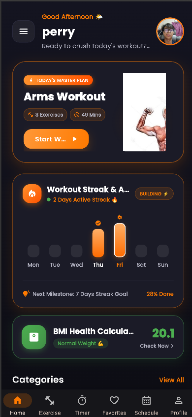
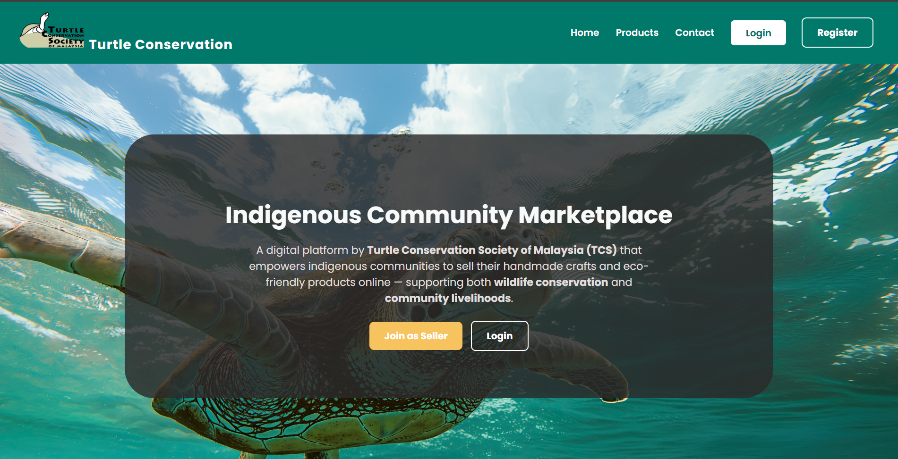
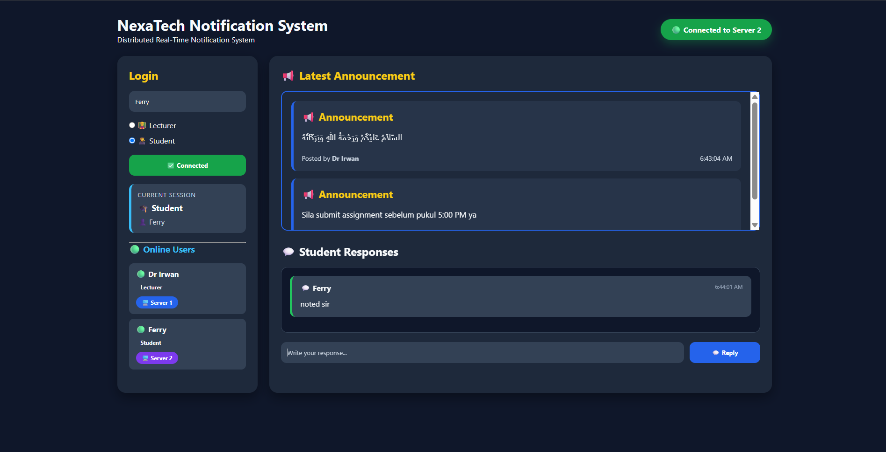
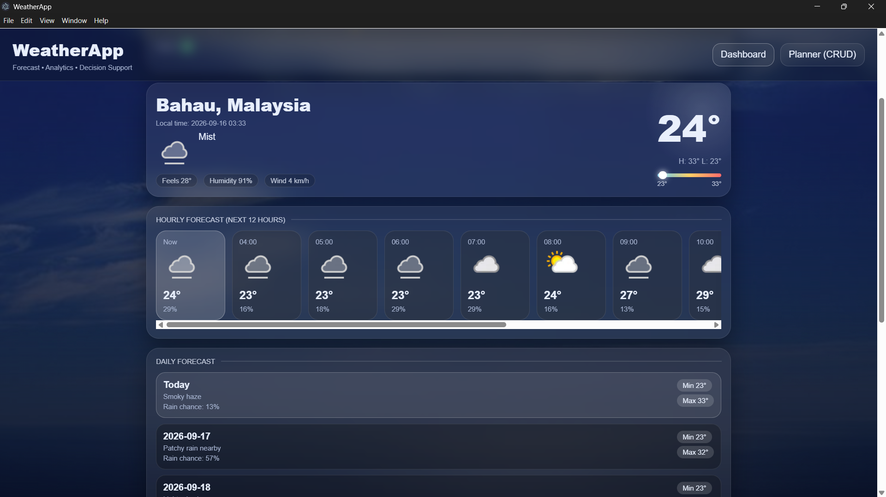

8 Screenshots01 / MOBILE APPLICATION
FitTrack V2
A workout planner mobile application built with Flutter and Dart featuring custom routines, exercise directories, BMI calculator, and interval timers.
Flutter · Dart · Mobile UI/UX
DIPLOMA IN COMPUTER SCIENCE · KPM BERANANG
I engineer practical software solutions across mobile, full-stack web, and distributed real-time systems. Focused on clean architecture, reliable APIs, and disciplined code.
{
"developer": "Ferry Irwan Shah Azman",
"program": "Diploma in Computer Science",
"institution": "Kolej Profesional MARA Beranang",
"internship_status": "🟢 Actively Seeking (Starting 7 Dec)",
"available_from": "07 December",
"specializations": [
"Mobile Development (Flutter)",
"Web & Backend (Laravel, PHP)",
"Real-Time Systems (Socket.IO, Redis)"
]
}ENGINEERING PROFILE
Bridging theoretical computer science fundamentals with hands-on, production-grade software development.
THE BACKGROUND
I'm a Diploma in Computer Science student at Kolej Profesional MARA Beranang, Malaysia, currently seeking an IT / Software Development Internship opportunity starting 7 December. My technical journey centers around transforming ideas into performant, clean-code applications across mobile, web, and distributed backends.
Whether building full-lifecycle Flutter workout trackers, multi-role Laravel marketplace platforms with relational database schemas, or distributed Socket.IO notification engines synced via Redis Pub/Sub, I love solving architectural challenges that make real impacts.
QUICK SPECS
Awarded for academic excellence at Kolej Profesional MARA Beranang. Explore photos from Orientation Committee (OC), CSR Tadika Little Caliphs, and campus development.
TECHNICAL CAPABILITIES
Categorized technical skills organized by layer—from client interfaces to distributed messaging and network infrastructure.
Cross-platform mobile applications, state management, and desktop application development.
Full-stack web applications, MVC architecture, templating, and REST API development.
Relational database design, distributed event pub/sub brokers, and persistent storage.
Network design simulation, source control, testing tools, and local development servers.
ENGINEERED WORK

8 Screenshots01 / MOBILE APPLICATION
A workout planner mobile application built with Flutter and Dart featuring custom routines, exercise directories, BMI calculator, and interval timers.
Flutter · Dart · Mobile UI/UX

5 Screenshots02 / FULL-STACK WEB
A web marketplace supporting turtle conservation artisans with multi-role access control, product catalogs, and dedicated seller CRUD dashboards.
Laravel · PHP · MySQL · Blade

3 Screenshots03 / DISTRIBUTED REAL-TIME
A distributed real-time messaging system utilizing Node.js and Socket.IO with multi-server Redis Pub/Sub synchronization and automatic client failover.
Node.js · Socket.IO · Redis Pub/Sub

3 Screenshots04 / DESKTOP & API
A desktop weather analytics and forecast decision support application integrating WeatherAPI with rain risk predictions and local activity scheduling.
Electron · JavaScript · Weather API
GET IN TOUCH
I'm actively seeking IT Internship and Junior Software Development opportunities. Feel free to explore my repositories or get in touch.
@ferryyirwan · Repositories & Commits
View Code on GitHub ↗Ferry Irwan Shah Azman · Professional Network
Connect on LinkedIn ↗Starts 7 December · Malaysia / Remote
Seeking Roles Starting 7 Dec ↗